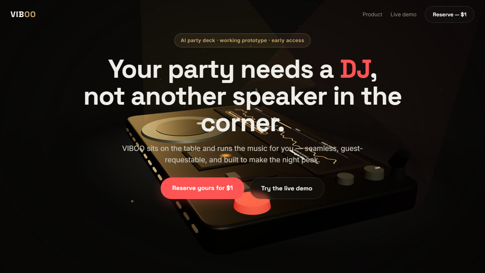
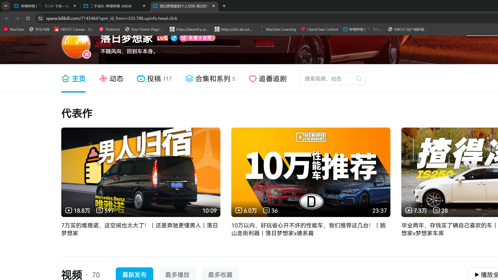
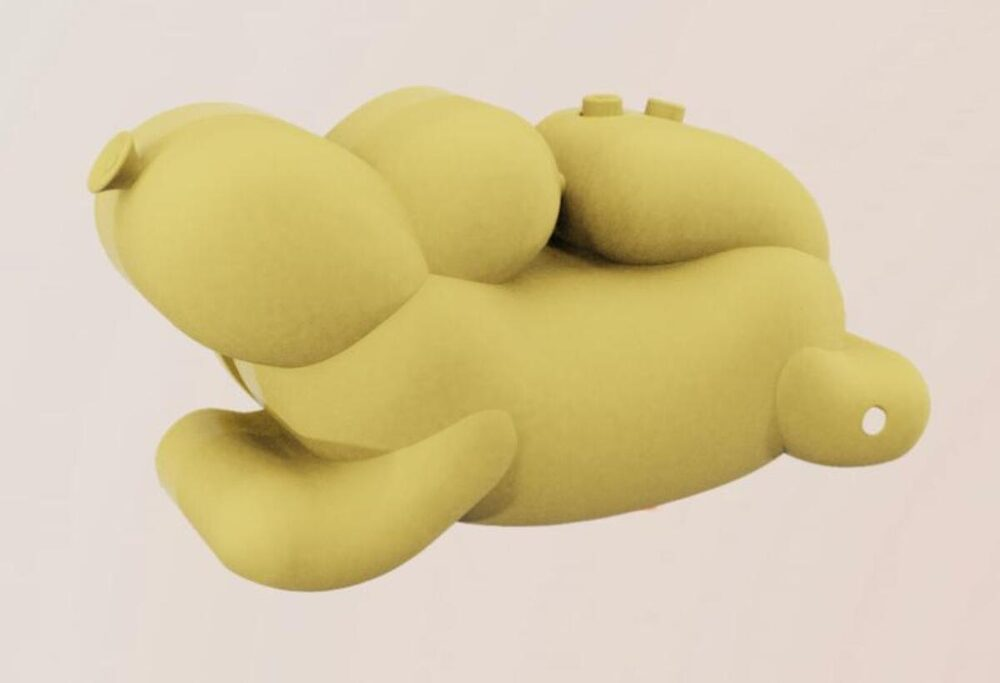
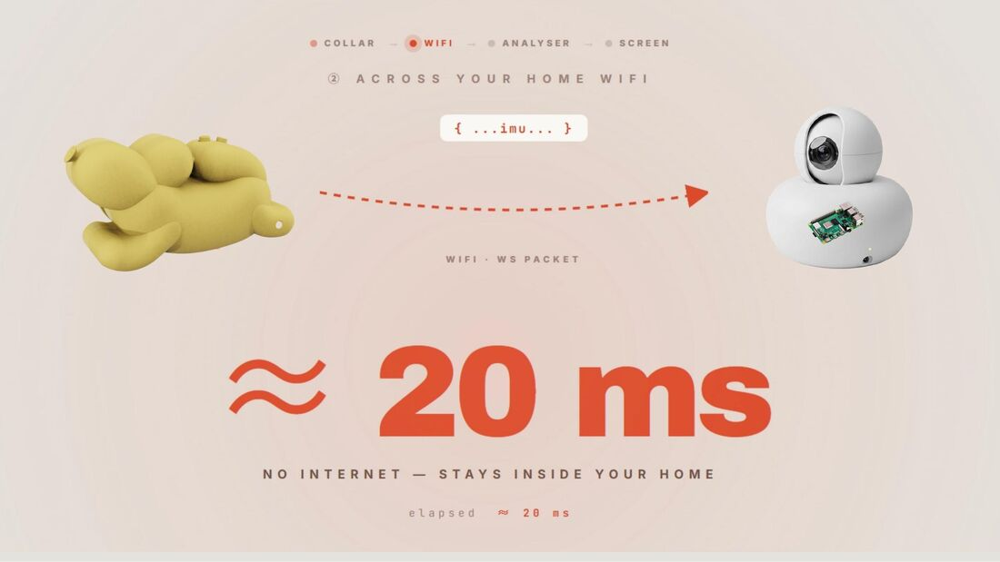
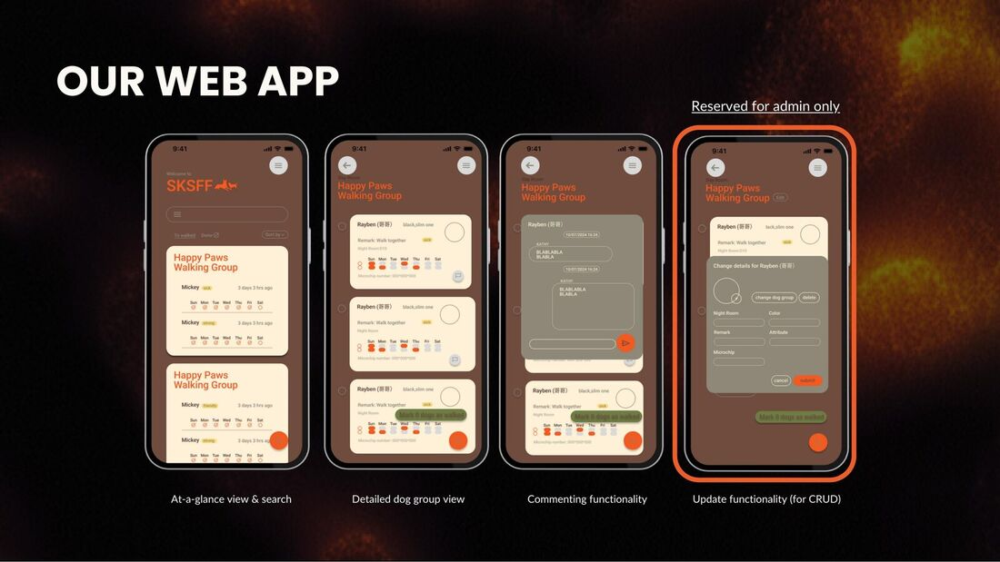
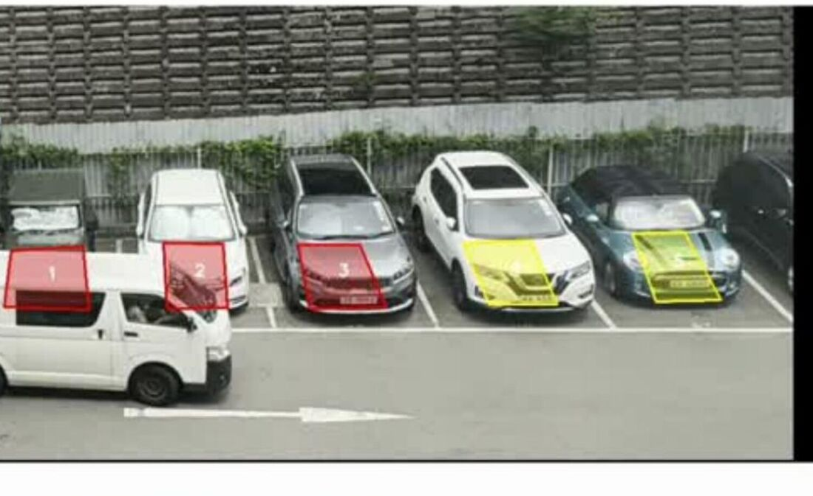
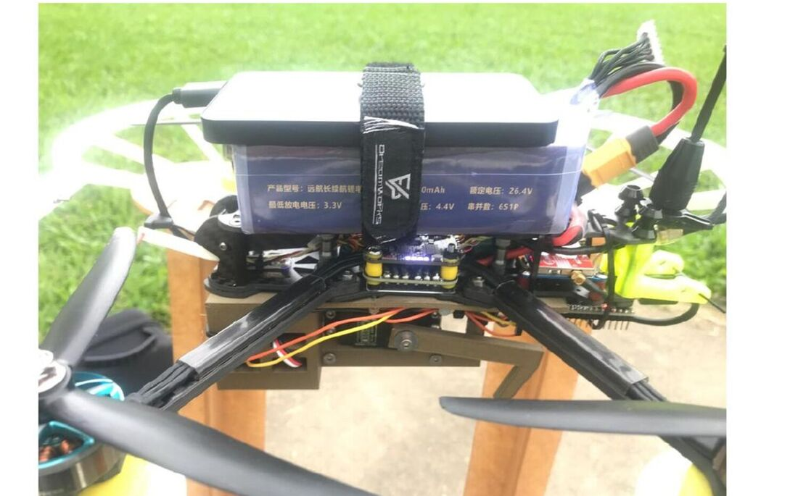

Best Project · Innox 2026/01
Vibe Box
An AI-assisted DJ station that reads the room and drives the whole vibe — audio, reactive lighting, and a built-in speaker, moving together.
./open --details// embedded systems & algorithms — hong kong
I'm Ziheng "Zane" Cheng — an engineer at HKUST who turns sensors, firmware, and algorithms into hardware that can sense, decide, and react. // the rig on the right is live — move your cursor over it
zane@hkust:~$ cat 01_about.md
I'm a final-year BSc student in Integrative Systems & Design (CS Stream) + Big Data Technology at HKUST. My core is embedded systems and algorithms — wiring up microcontrollers and sensors, then writing the signal-processing and machine-learning code that turns raw data into useful behavior.
I've shipped real-time computer-vision systems as an engineer, built 3D reconstruction pipelines from point clouds, and prototyped wearables from sensor to PCB to product. I study abroad whenever I can — exchanges at NUS and Charles University — and I love the pace of hackathons.
Away from the workbench I'm usually behind a camera, making music, or at a ping-pong table. I like making things in those worlds too — it's all the same curiosity.
zane@hkust:~$ ls 02_skills/
zane@hkust:~$ ls -la 03_projects/
An AI-assisted DJ station that reads the room and drives the whole vibe — audio, reactive lighting, and a built-in speaker, moving together.
./open --detailsA smart collar that watches a dog when its owner can't — flagging stress, low activity, and accidents through motion sensing and a human-in-the-loop AI.
./open --detailsA web app for Sai Kung Stray Friends that lets volunteers run daily operations — walks, search, and notes — without depending on the full-time staffer.
./open --detailsA real-time vehicle-recognition pipeline: YOLOv8 + ByteTrack detect and track every car, then an LLM reads attributes and multi-region plates.
./open --detailsPoint-cloud processing and 3D reconstruction of industrial tanks, with volume calculations accurate to under 0.01% error.
./open --detailsUndergraduate research applying U-Net and DeepLabV3 to segment food images — a foundation for automated nutritional analysis from a photo.
./open --detailsA drone-based flood-rescue system that reaches victims when roads and networks are down. I led the drone subsystem.
./open --detailszane@hkust:~$ tail -f 04_experience.log
Fase Technology · Hong Kong
Built a smart-parking vision system end to end — vehicle recognition, classification, and multi-region plate recognition with LLMs at 95%+ accuracy.
National University of Singapore
Spring semester abroad deepening CS and mathematics foundations.
HKUST
Machine learning for food-nutrition segmentation using U-Net & DeepLabV3 (85% on Food103).
Bright Dream Robotics · Guangdong
Point-cloud processing and 3D reconstruction with sub-0.01% volume error; slice-refinement for cleaner scans.
Charles University · Prague
Interdisciplinary summer program abroad.
HKUST · Hong Kong
Coursework across ML, robotics, 3D modeling, product design, and project management.
zane@hkust:~$ ls ~/also/
engineering pays the rent; these are what i'd build anyway. a dj instrument, a desktop rebuilt in graphite, a bike and its brain. same curiosity, fewer specs.
an ai dj instrument i built — a physical deck, not an app.
force-feedback jog wheels, dual screens, offline stem splitting, faders and leds. esp32-s3 firmware talking to a python audio brain. all the ai runs on-device — no cloud, no latency, no subscription. it's the thing vibe box wanted to be when it grew up.

// viboo deck ui
// graphite desktopmy windows, rebuilt in graphite.
pure black, silver, zero color. a mono hud that reads chrono / atmos / system,
a graphite terminal, oh-my-posh, a screensaver that just says
ZANE // ONLINE. three rounds of refining until every pixel was grey on grey.
you're looking at this site's aesthetic — it's the same one.
the bike, and its brain.
i built the bike (a 451 folder, hydraulic group, my own bom) — then i built its electronics: an e-ink bike computer, smart headlight and taillight, a strain-gauge power meter, and an ios app that writes full hkworkouts into apple health. the bike is mine; so is the firmware.
zane@hkust:~/also$ more coming — keyboard middleware, photos, whatever i build next.
zane@hkust:~$ ping zane
Open to embedded / algorithms roles, research collaborations, and hackathon teams. The fastest way to reach me is email — 64 bytes from zane: expect a fast reply.
chengziheng0621@outlook.comBest Project · Innox 2026
Vibe Box is an AI-assisted DJ station that reads the energy of a room and drives the whole experience — mixing audio while syncing reactive lighting and a built-in speaker so the music, lights, and mood move as one. It won Best Project at the Innox Summer Camp 2026.


Final-Year Project
A smart collar that watches over a dog when its owner can't — flagging stress, low activity, and accidents so health risks aren't caught too late. A tiny board on the collar (ESP32-S3 + MPU6050) samples accelerometer and gyroscope data 50 times a second and streams it over Wi-Fi as JSON to an edge analyser. There, a human-in-the-loop AI summarises behaviour trends and only interrupts for genuine anomalies — designed deliberately to beat alert fatigue, the thing real owners told us they feared most.

Collaboration · SKSFF
A web app built for Sai Kung Stray Friends, a Hong Kong dog-rescue shelter, so volunteers can run daily operations without leaning on the one full-time staffer. They can mark dogs as walked, search any dog, and leave comments; admins manage dogs, groups, and accounts. Heavy refactoring cut page load to 0.69 s and button response to 0.14 s, with database queries down from 6.4 s to 0.7 s.

Internship · Fase Technology
A real-time vehicle-recognition pipeline I led at Fase Technology. YOLOv8 + ByteTrack detect and track every vehicle, then an LLM reads make/model, colour, type, and price range, alongside multi-region (HK / Mainland / Macau) licence-plate recognition. It runs fully on-premise with GPU acceleration for privacy and low latency — targeting 95%+ detection, 90%+ plates, and under 2 s response.
Internship · Bright Dream Robotics
At Bright Dream Robotics I worked on point-cloud processing and 3D reconstruction of industrial beer tanks, achieving volume calculations with under 0.01% error. I also built a slice-refinement algorithm that fixed contour artefacts caused by edge errors, sharpening the quality of models reconstructed from room scans.
Research · UROP
Undergraduate research (UROP) applying U-Net and DeepLabV3 semantic-segmentation models to food images, reaching 85% accuracy on the Food103 dataset — a foundation for automated nutritional analysis from a single photo. Built in PyTorch with a focus on data analysis and visualisation.

ISD Team Project
FloodUU is a drone-based flood-rescue system that reaches victims when roads and networks are down. Phones connect over Bluetooth — no internet needed — to send an SOS and location; an autonomous carrier drone then delivers first-aid with path planning, obstacle avoidance, and automatic return-to-charge. Coverage is 15 km per base station with ~15-minute response. I led the drone subsystem, and the team built it with two NGOs, frontline firefighters, and a university professor.